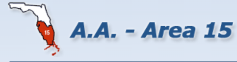
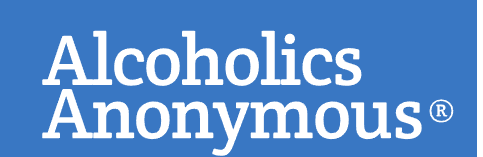

Contribuciones a la Séptima Tradición
"Los propios grupos de A.A. deberían contar plenamente con las contribuciones voluntarias de sus propios miembros. Creemos que cada grupo debería alcanzar pronto este ideal; que cualquier solicitud pública de fondos bajo el nombre de Alcohólicos Anónimos es altamente peligrosa, ya sea por grupos, clubes, hospitales u otras agencias externas; Que aceptar grandes donaciones de cualquier fuente, o de contribuciones que conlleven alguna obligación, es imprudente. Además, vemos con gran preocupación aquellos bonos del Tesoro de los A.A. que continúan, más allá de reservas prudentes, acumulando fondos sin ningún propósito declarado de los A.A. La experiencia a menudo nos ha advertido de que nada puede destruir tan seguramente nuestra herencia espiritual como disputas inútiles sobre propiedad, dinero y autoridad." — Tradición Siete, formato largo
Esto significa que solo los miembros de A.A. contribuyen económicamente a A.A., e incluso los miembros de A.A. tienen un límite en la cantidad que pueden aportar. Esto mantiene a A.A. libre de influencias externas que podrían desviarnos de nuestro propósito principal, que es ayudar al alcohólico que aún sufre. La cantidad de la contribución es secundaria a la conexión espiritual que une a todos los grupos en el mundo.

Contribuciones al Área 15Los grupos y miembros del Distrito 17 que deseen enviar sus aportaciones correspondientes al Área 15 pueden realizarlas de forma rápida y directa mediante Zelle.
treasurer@area15aa.org

Contribuciones a la OSGPara realizar pagos online en la OSG, debe registrarse con un email (solo la primera vez).
Si ya dispone de su cuenta o grupo registrado, acceda directamente a realizar su aportación.
Si selecciona tipo de contribución de grupo puede buscarlo:
- Nombre: Sale una lista de los grupos con ese nombre, puede distinguirlo por la ciudad.
- Por Id: Poner el código de su grupo.
Puede utilizar Recurrencia para que se repita ese pago automáticamente.